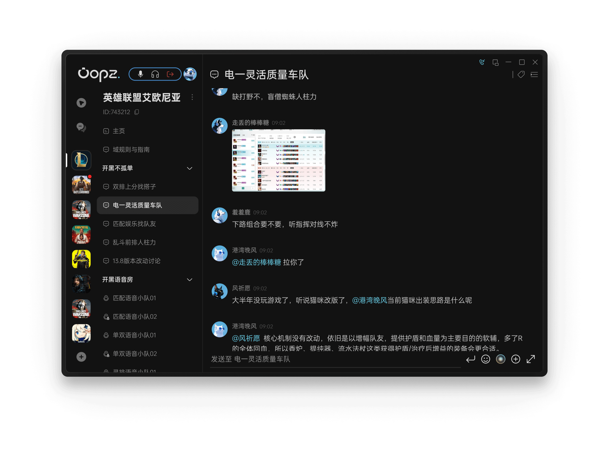
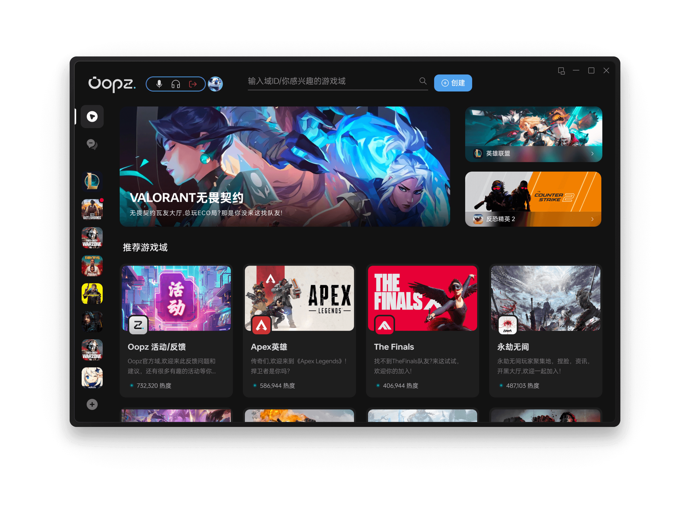

Oopz 两年迭代史：一款游戏语音软件的"无广告"执念与社区野心
从单点开黑工具到域社区聚合平台，Oopz 的版本迭代里藏着一支团队对"不打扰"的坚持，以及对游戏社区形态的持续探索。
我第一次注意到 Oopz 不是因为它功能多，而是因为朋友在语音频道里随口说了一句——"这软件开了三个小时没弹过一次广告"。这句话在今天这个遍地弹窗和开屏广告的软件市场里，分量比任何参数表都重。
现在从官网能看到，这版的 Oopz 已经远不止是一个语音开黑工具了。PC 客户端左侧是域的频道树，文字频道和语音频道并行，右侧聊天区里飘着攻略、招募帖和日常灌水，顶部还嵌着一个游戏加速器入口。你可以在发现页逛推荐域，按游戏主题找同好的据点，每个域卡片上标着热度值，头部游戏域动辄数十万热度。移动端负责日常在途开麦和快速回消息，网页版给了临时应急的选择。四端互通、域结构、AI 降噪、内置加速器、AI 助理——这些功能凑在一起，已经不是传统意义上的语音软件了。

来路：从"开黑不卡"到"不打扰"的产品哲学
样本文档没有把 Oopz 的早期版本时间线列出来，但从当前功能的堆叠方式，能读出一条清晰的演进路径。
起步阶段的 Oopz 显然是把"开黑体验"放在第一位的。官方反复强调的几个硬指标——运行最低约 30MB 内存占用、实验室码率 192kbps 的 AI 降噪、语音通话的回声消除——这些都是典型的"基础体验死磕项"。一个面向游戏玩家的语音工具，先把"不卡、不炸麦、不抢资源"做到位，才能谈其他。从样本文档里"频道音质与延迟怎么调""安卓未知来源授权"这类基础排障文档占比不低，也能反推早期用户的核心诉求就是"能用、好用"。
然后是"域"这个结构的引入。Oopz文档里大量篇幅在讲创建域、规划频道结构、身份组与权限管理——这不是一个语音工具该操心的事，这是社区产品的骨架。把类 Discord 的域社区搬进来，Oopz 迈出了从"单场开黑"到"长期据点"的关键一步。语音频道不再只是临时拉个房间打完就散，文字频道可以沉淀攻略和日常聊天记录，域本身成了社交关系的载体。这一步的具体发生时间文档没提，但它的意义很明确：Oopz 不想只做一个管道，它想做一个容器。
接下来是多端铺开。安卓、iOS、PC、网页版四端同时登录，手机上没聊完的话题回电脑接着来。这背后是团队对用户使用场景的判断——游戏语音不是只在电脑前才用，等队友上号、赛前热身、赛后复盘，碎片时间都需要一个轻量入口。网页版更是给了临时组队的应急方案，不用装客户端就能进频道，各端安装包从下载拿就好。

再往后，加速器和 AI 功能的加入让 Oopz 的定位更加丰满。PC 客户端内置游戏加速器，官方标注技术支持来自腾讯云——这是一个聪明的选择，自己不做底层加速技术，用成熟的云服务做集成，快速补上了"开黑前给游戏加速"这个高频场景。AI 降噪属于语音基础能力的加固，而 AI 助理方向的功能则走得更远，官方帮助中心提到 AI 聊天时特意标注"具体形态随版本变化较大"，说明这部分还在快速迭代、尚未定型。
会员体系的出现是另一个信号。无限公民会员可以为名下每个域生成 6 位域短 ID，方便记忆和传播。这说明 Oopz 开始从"让用户用"转向"让用户运营"——给域主提供更顺手的工具，鼓励他们把自己的域做起来。会员权益明细文档的存在，本身就是产品从工具属性向平台属性演进的证明。
迭代规律：团队一直在死磕什么
把这些功能点串起来，Oopz 的版本迭代里有两条主线异常稳定。
第一条是"不打扰"。从起步到现在，"无广告"始终是官方帮助中心产品介绍里置顶强调的关键词，应用商店评论区也反复被用户提到。在一个靠广告变现很容易的品类里，选择不走这条路，说明团队对"产品体验被打断"这件事有极强的底线。这条底线延伸到了其他细节——30MB 低占用是不打扰游戏帧率，碎片互动表情是不打断专注开黑的节奏，域结构让用户不必在语音、微信、贴吧之间来回切换，本质上也是减少切换成本的打扰。
第二条是"把社区做厚"。域和频道的结构是骨架，四端互通让社区能流动起来，会员体系给了域主运营的动力，AI 助理方向还在试探社区里的新交互方式。样本文档里没有出现 Oopz 自己做内容、做活动的描述——团队显然不是想做一个内容平台，而是想做一个让玩家自己沉淀内容的场域。域里的攻略、招募帖、日常灌水，都是用户自己写的，Oopz 提供的只是让这些内容能长期留存、能被同好发现的基础设施。
那什么是团队一直没碰的？样本文档里完全没有提到 Oopz 自己做游戏内容推荐、做直播、做电竞赛事。这些在同类产品里常见的扩展方向，Oopz 目前的版本里都没有痕迹。是没能力做还是不想做？从"不打扰"的产品哲学来看，更像是后者——如果开始做内容推荐，就意味着算法介入用户看到什么，这和"无广告"背后的不打扰逻辑是冲突的。
预判：照这个路线，下一步大概率怎么走
从两年迭代的规律推，Oopz 接下来的走向可能还是围绕那两条主线展开。
"不打扰"这条线，AI 降噪和低占用可能已经做到了物理极限，接下来的空间大概率在"更智能的静音"上——比如根据游戏阶段自动调整麦克风灵敏度，团战激烈时自动降低环境音，赛后复盘时自动切到清晰模式。这类功能不需要加广告、不增加资源占用，符合团队一直以来的思路。
"社区做厚"这条线的想象空间更大。域结构已经搭好了，下一步可能是让域之间能互动——比如跨域的临时组队频道、跨域的活动匹配。会员体系目前只有域短 ID 这一项明确权益，后续大概率会扩充，比如域的自定义皮肤、专属邀请码、高级频道管理工具。AI 助理的形态文档说还在变，方向可能是给域主做一个半自动运营助手——自动整理频道内容、自动匹配活跃成员、自动生成招募文案。
但有一件事我不太会期待——Oopz 自己产出内容。如果哪天打开域发现顶部有官方推送的游戏资讯，那说明产品哲学可能要变了。不过以目前的迭代节奏来看，这种变化短期内不太可能发生。
Oopz 的两年，其实是在回答一个老问题：一款游戏语音软件，到底应该做多大？有人选了"什么都加"的路线，结果变成了臃肿的全家桶。Oopz 选的是另一条路——把语音的基础体验做扎实，把社区的容器搭好，剩下的让用户自己往里装东西。这条路看起来慢，但只要"无广告"的底线不破，积累下来的用户信任就是很难被替代的东西。上面聊的这些整理资料，分别在GitHub、Gitee、GitCode三个仓库都能拿到，国内访问选哪个都行。